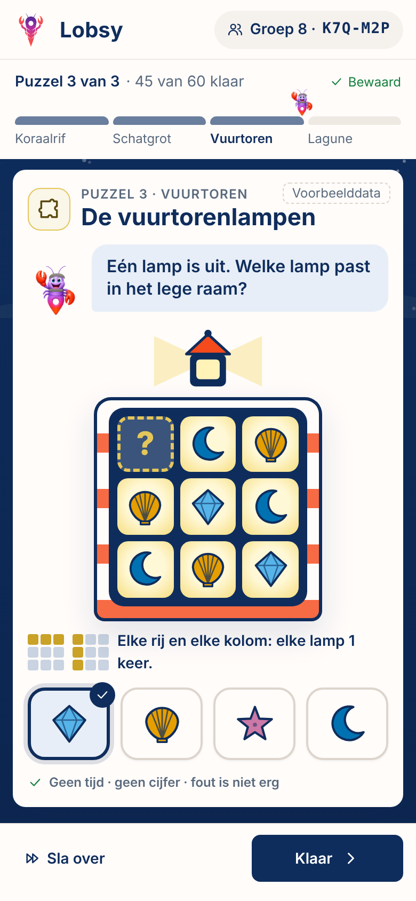
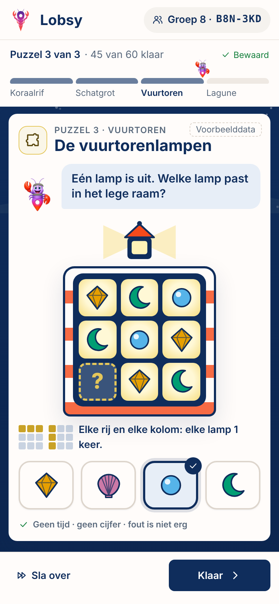

De vuurtorenlampen — twee leerlingen, twee opdrachten
Zelfde sjabloon, zelfde moeilijkheid (niveau 2). De leerlingcode is de seed: elke leerling krijgt een andere rij/route/plek en het juiste antwoord staat op een andere knop. Afkijken (“de derde knop!”) werkt dus niet.

K7Q-M2P leeg raam: rij 1, kolom 1 · antwoord: lichtblauw kristal · antwoord op knop 1 van 4
≠Andere vormen, kleuren en posities — zelfde soort denkwerk

B8N-3KD leeg raam: rij 3, kolom 1 · antwoord: lichtblauwe parel · antwoord op knop 3 van 4